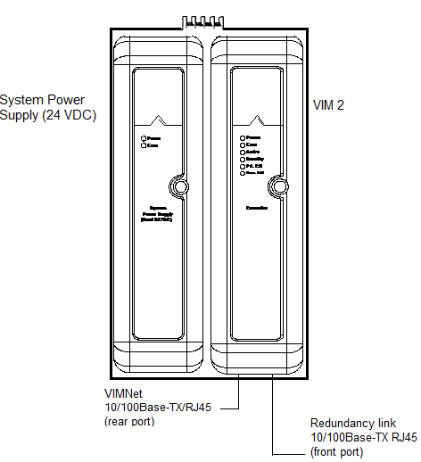
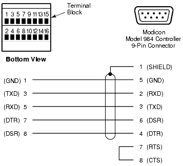
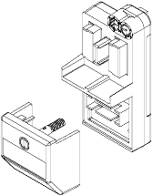

Source: DeltaV Scalable Process System — Hardware Installation and Reference Manual, D800001X312, April 2021 (Emerson). Appendix C, "Interface Specifications," pp. 125–200.
This lesson provides a comprehensive master reference for every analog I/O card supported by the DeltaV system. Analog cards handle continuously variable signals — 4–20 mA current loops, 1–5 VDC voltage signals, thermocouple and RTD temperature inputs, and HART digital communication superimposed on analog signals. Use the tables below to select the correct card for your application.

Engineering schematic for DeltaV DCS redundant hardware module pair. Left module is a 24V DC System Power Supply with Power and Fault diagnostic LEDs and central locking latch. Right module is a VIM 2 (Virtual I/O Module) with diagnostic LEDs: Power, Fail, Active, FAS Eth, and Profibus. VIMNet 10/100Base-TX/RJ45 rear port connects to DeltaV internal network. Dedicated Redundancy Link 10/100Base-TX/RJ45 front port syncs the two redundant modules for seamless failover. Core DeltaV redundancy feature for continuous process industries. (page 201)
v>
12.1 — Analog I/O Card Types at a Glance
Key Concept: DeltaV analog I/O cards fall into five major categoriesmA current loops to final elements
• Thermocouple/mV — reads millivolt signals from thermocouples and low-level voltage sources
• RTD/Ohms — reads resistance temperature detectors and ohmic sensors
• Isolated Input — multi-function card supporting TC, mV, RTD, ohms, and voltage inputs with per-channel isolation
• Multifunction — combines discrete input and pulse input capabilities
12.2 — Master Reference Table: All Analog I/O Cards
The following table provides a complete comparison of every analog I/O card available in the DeltaV system. Use this as your primary card selection reference.
Card Type
Channels
Signal Range
Isolation
Resolution
Accuracy
HART
Redundancy
AI, 8-Channel, 4–20 mA
8
4–20 mA Full: 1–22.5 mA
Channel-to-system: 1500 VDC Optically isolated
16 bits
0.1% of span
No
No
AI, 8-Channel, 4–20 mA, HART
8
4–20 mA Full: 1–22.5 mA
Channel-to-system: 1500 VDC Optically isolated
16 bits
0.1% of span
Yes
No
S2 AI, 8-Channel, 4–20 mA
8
4–20 mA Full: 1–22.5 mA
Channel-to-system: 1500 VDC Optically isolated
16 bits
0.1% of span
No
Simplex only
S2 AI, 8-Channel, 4–20 mA, HART
8
4–20 mA Full: 1–22.5 mA
Channel-to-system: 1500 VDC Optically isolated
16 bits
0.1% of span
Yes
Yes
AI, 8-Channel, 1–5 VDC
8
1–5 VDC Full: 0.25–5.64 VDC
Channel-to-system: 1500 VDC Optically isolated
16 bits
0.1% of span
No
No
S2 AI, 16-Channel, 4–20 mA, HART
16
4–20 mA Full: 2–22 mA
Field-to-system: 1000 VDC No channel-to-channel isolation
16 bits
0.2% of span
Yes
Simplex only
S2 Plus AI, 16-Channel, 4–20 mA, HART
16
4–20 mA Full: 2–22 mA
Field-to-system: 1000 VDC No channel-to-channel isolation
16 bits
0.2% of span
Yes
Yes
AO, 8-Channel, 4–20 mA
8
4–20 mA Full: 1–23 mA
Channel-to-system: 1500 VDC Optically isolated
12 bits
0.25% of span
No
No
AO, 8-Channel, 4–20 mA, HART
8
4–20 mA Full: 1–23 mA
Channel-to-system: 1500 VDC Optically isolated
14 bits
0.25% of span
Yes
No
S2 AO, 8-Channel, 4–20 mA, HART
8
4–20 mA Full: 1–23 mA
Channel-to-system: 1500 VDC Optically isolated
14 bits
0.25% (0–60°C) 0.4% (−40 to 70°C)
Yes
Yes
S2 Plus AO, 16-Channel, 4–20 mA, HART
16
4–20 mA Full: 1–23 mA
Galvanic, 1000 VDC No channel-to-channel isolation
14 bits
0.25% of span
Yes
Yes
Thermocouple, mV
8
TC: B, E, J, K, N, R, S, T mV: −100 to +100 mV
Channel-to-system: 1500 VDC Ch 1–4 isolated from 5–8
16 bits
Varies by TC type (see Table C-38)
No
No
S2 Thermocouple, mV
8
TC: B, E, J, K, N, R, S, T mV: −100 to +100 mV
Channel-to-system: 1500 VDC Ch 1–4 isolated from 5–8
12.3.1 — AI, 8-Channel, 4–20 mA / HART (Table C-1)
Parameter
Specification
Number of Channels
8
Isolation
Channel-to-system: 1500 VDC; optically isolated
Nominal Signal Range
4 to 20 mA
Full Signal Range
1 to 22.5 mA, with overrange checking
Valid Range for LED
0.75 to 23 mA
LocalBus Current
120 mA typical, 150 mA max S2 Redundant: 175 mA typical, 250 mA max
Field Circuit Power
300 mA max at 24 VDC (±10%) Per channel: 32 mA max (S2: 30 mA max)
Accuracy
0.1% of span
Resolution
16 bits
Repeatability
0.05% of span
Rolloff Frequency
−3 dB at 2.7 Hz
HART Scan Time
600–800 ms (typical) per enabled channel
Calibration
None required
Key Concept — HART Protocol: The HART (Highway Addressable Remote Transmitter) protocol layers digital information on top of the standard analog 4–20 mA process signal. HART-enabled AI cards can perform pass-through request/response, variable reporting, and field device status reporting — all without interrupting the analog signal.
Field-to-system: 1000 VDC No channel-to-channel isolation
Nominal Signal Range
4 to 20 mA
Full Signal Range
2 to 22 mA
2-Wire Transmitter Power
13.5 V min at 20 mA (current limited to 29 mA max)
LocalBus Current
85 mA typical, 150 mA max
Field Circuit Power
600 mA max at 24 VDC (±10%); 30 mA max per channel
Accuracy
0.2% of span
Resolution
16 bits
Filtering
−3 dB at 2.7 Hz; −90 dB at 1200 Hz
Tip — 16-Channel vs. 8-Channel AI: The 16-Channel AI card provides double the density but sacrifices channel-to-channel isolation and has slightly lower accuracy (0.2% vs. 0.1%). Use 16-Channel cards when channel density is critical and all sensors share a common ground reference.
12.4 — Analog Output Card Specifications
12.4.1 — AO, 8-Channel, 4–20 mA / HART (Table C-4)
Parameter
Specification
Number of Channels
8
Isolation
Channel-to-system: 1500 VDC; optically isolated
Nominal Signal Range
4 to 20 mA
Full Signal Range
1 to 23 mA
LocalBus Current
120 mA typical, 150 mA max S2 Redundant: 175 mA typical, 250 mA max
Field Circuit Power
300 mA max at 24 VDC (±10%)
Accuracy
0.25% of span (0–60°C) S2: 0.4% at −40 to 70°C
Resolution
12 bits (non-HART); 14 bits (HART and S2 HART)
Output Compliance
20 mA at 21.6 VDC supply into 700 Ω load
HART Scan Time
600–800 ms (typical) per enabled channel
12.4.2 — AO, 16-Channel, 4–20 mA, HART, Series 2 Plus (Table C-5)
Parameter
Specification
Number of Channels
16
Isolation
Galvanic, 1000 VDC No channel-to-channel isolation
Nominal Signal Range
4 to 20 mA
Full Signal Range
1 to 23 mA
LocalBus Current
260 mA max in redundant configurations
Field Power
400 mA max at 24 VDC per card
Accuracy
0.25% of span
Resolution
14 bits
Output Compliance
14 V min at 20 mA; 700 Ω max load
Open Loop Detection
Threshold: 0.70 mA
12.5 — Thermocouple and Millivolt Card Specifications
12.5.1 — Thermocouple, mV Card (Table C-37)
Parameter
Specification
Number of Channels
8
Sensor Types
TC: B, E, J, K, N, R, S, T, uncharacterized mV: Low-level voltage source (−100 to +100 mV)
Isolation
Channel-to-system: 1500 VDC Ch 1–4 isolated from Ch 5–8 (1500 VDC) Channels within each group are NOT isolated; must be within ±0.7 VDC of each other
LocalBus Power
12 VDC, 350 mA (S2: 210 mA)
Resolution
16 bits
Repeatability
0.05% of span
Cold Junction Compensation
±1°C
CMRR
120 dB
Calibration
None required
12.5.2 — Thermocouple Sensor Type Specifications (Table C-38)
Sensor Type
Full Scale
Operating Range
25°C Reference Accuracy
Temperature Drift
Resolution
B
250 to 1810°C
500 to 1810°C
±2.4°C
±0.056°C/°C
~0.18°C
E
−200 to 1000°C
−200 to 1000°C
±0.6°C
±0.008°C/°C
~0.07°C
J
−210 to 1200°C
−190 to 1200°C
±0.8°C
±0.011°C/°C
~0.05°C
K
−270 to 1372°C
−200 to 1372°C
±0.5°C
±0.016°C/°C
~0.18°C
N
−270 to 1300°C
−190 to 1300°C
±1.0°C
±0.007°C/°C
~0.10°C
R
−50 to 1768°C
−50 to 1768°C
±2.1°C
±0.013°C/°C
~0.14°C
S
−50 to 1768°C
−40 to 1768°C
±2.2°C
±0.067°C/°C
~0.24°C
T
−270 to 400°C
−200 to 400°C
±0.7°C
±0.001°C/°C
~0.04°C
Uncharacterized
−100 to 100 mV
−100 to 100 mV
0.1 mV
±0.002 mV/°C
~0.003 mV
Tip: Type K thermocouples offer the best reference accuracy (±0.5°C) among common TC types. For high-temperature applications above 1400°C, use Type B, R, or S — but expect lower accuracy (±2.1 to ±2.4°C).
12.6.2 — RTD Sensor Type Specifications (Table C-30)
Sensor Type
Full Scale
Operating Range
25°C Reference Accuracy
Temperature Drift
Resolution
Pt100
−200 to 850°C
−200 to 850°C
±0.5°C
±0.018°C/°C
~0.05°C
Pt200
−200 to 850°C
−200 to 850°C
±0.5°C
±0.012°C/°C
~0.05°C
Pt500
−200 to 850°C
−200 to 850°C
±3.5°C
±0.063°C/°C
~0.18°C
Ni120
−70 to 300°C
−70 to 300°C
±0.2°C
±0.006°C/°C
~0.02°C
Cu10
−30 to 140°C
−30 to 140°C
±2.0°C
±0.157°C/°C
~0.23°C
Resistance
0 to 2,000 Ω
0 to 2,000 Ω
±6.2 Ω
±0.112 Ω/°C
~0.02 Ω
User-defined
0 to 1000 Ω
0 to 1000 Ω
±0.4 Ω
±0.009 Ω/°C
~0.05 Ω
Key Concept — RTD vs. Thermocouple:
• RTDs (Pt100, Ni120) offer better accuracy (±0.2 to ±0.5°C) and stability over time but have a limited temperature range (typically −200 to 850°C).
• Thermocouples cover a much wider temperature range (up to 1810°C for Type B) but have lower accuracy (±0.5 to ±2.4°C) and require cold junction compensation.
• Choose RTDs for precision measurement in moderate ranges; choose thermocouples for extreme temperatures.
Why Use the Isolated Input Card? The Isolated Input card is the most versatile analog input card in the DeltaV system. Each of its 4 channels can be independently configured for a different sensor type (TC, RTD, mV, or voltage). With 5000 VDC channel-to-system isolation and 3100 VDC channel-to-channel isolation, it is ideal for applications where sensors are in different electrical environments or where hazardous voltages may be present.
Warning: Hand-held, two-way radios should not be keyed within 0.5 m (1.64 ft) of Intrinsically Safe Analog Input cards. Radiated emissions from these units can interfere with system operation.
Technical schematic diagram for DeltaV DCS field I/O station/module. Top-left shows front view of a DeltaV Remote I/O Module with two rows of labeled terminal blocks and '24V DC Power Supply' input. Top-right shows rear Station Connector with Dual Communication Ports for redundant network design. Lower section is a signal wiring/termination diagram mapping signal types to terminal blocks: AI (4-20mA Analog Input), AO (4-20mA Analog Output), DI (Dry Contact Digital Input), DO (Dry Contact Digital Output), and 24 VDC Power terminals (+24V, -24V, GND). Installation/commissioning reference. (page 197)
Front/side view of an Emerson DeltaV M-Series Hardware Module (distributed control system component). Top black header panel contains: left section with grid of small status indicator LEDs for module health, power, fault status, and network connectivity; central section with larger lit status indicator (green/active) for main power/operational status; right section with row of physical ports/connectors for DeltaV I/O bus, network backbone, or field devices (HART, Ethernet, or I/O links). Front white module face shows: prominent lit blue indicator (MODULE STATUS) and number '311' (module's unique system address/slot number). (page 258)
Front/side view of an Emerson DeltaV M-Series Hardware Module (distributed control system component). Top black header panel contains: left section with grid of small status indicator LEDs for module health, power, fault status, and network connectivity; central section with larger lit status indicator (green/active) for main power/operational status; right section with row of physical ports/connectors for DeltaV I/O bus, network backbone, or field devices (HART, Ethernet, or I/O links). Front white module face shows: prominent lit blue indicator (MODULE STATUS) and number '311' (module's unique system address/slot number). (page 258)
Front/side view of an Emerson DeltaV M-Series Hardware Module (distributed control system component). Top black header panel contains: left section with grid of small status indicator LEDs for module health, power, fault status, and network connectivity; central section with larger lit status indicator (green/active) for main power/operational status; right section with row of physical ports/connectors for DeltaV I/O bus, network backbone, or field devices (HART, Ethernet, or I/O links). Front white module face shows: prominent lit blue indicator (MODULE STATUS) and number '311' (module's unique system address/slot number). (page 258)
Front/side view of an Emerson DeltaV M-Series Hardware Module (distributed control system component). Top black header panel contains: left section with grid of small status indicator LEDs for module health, power, fault status, and network connectivity; central section with larger lit status indicator (green/active) for main power/operational status; right section with row of physical ports/connectors for DeltaV I/O bus, network backbone, or field devices (HART, Ethernet, or I/O links). Front white module face shows: prominent lit blue indicator (MODULE STATUS) and number '311' (module's unique system address/slot number). (page 258)
Low-resolution image of an Emerson DeltaV M-series field process instrument (transmitter/local indicator/controller). Features robust rugged light-blue textured circular enclosure (typical for hazardous-area certified equipment, explosion-proof or intrinsically safe). Dark black circular window covers monochrome greenish-backlit LCD display. Display shows small top text labels (PV/Process Value and secondary parameter) with primary readout of '90' (main measured/controlled process variable). Field-mounted instrument for measuring, monitoring, or controlling industrial process variables. (page 259)
Low-resolution image of an Emerson DeltaV M-series field process instrument (transmitter/local indicator/controller). Features robust rugged light-blue textured circular enclosure (typical for hazardous-area certified equipment, explosion-proof or intrinsically safe). Dark black circular window covers monochrome greenish-backlit LCD display. Display shows small top text labels (PV/Process Value and secondary parameter) with primary readout of '90' (main measured/controlled process variable). Field-mounted instrument for measuring, monitoring, or controlling industrial process variables. (page 259)
Low-resolution image of an Emerson DeltaV M-series field process instrument (transmitter/local indicator/controller). Features robust rugged light-blue textured circular enclosure (typical for hazardous-area certified equipment, explosion-proof or intrinsically safe). Dark black circular window covers monochrome greenish-backlit LCD display. Display shows small top text labels (PV/Process Value and secondary parameter) with primary readout of '90' (main measured/controlled process variable). Field-mounted instrument for measuring, monitoring, or controlling industrial process variables. (page 259)
Low-resolution image of an Emerson DeltaV M-series field process instrument (transmitter/local indicator/controller). Features robust rugged light-blue textured circular enclosure (typical for hazardous-area certified equipment, explosion-proof or intrinsically safe). Dark black circular window covers monochrome greenish-backlit LCD display. Display shows small top text labels (PV/Process Value and secondary parameter) with primary readout of '90' (main measured/controlled process variable). Field-mounted instrument for measuring, monitoring, or controlling industrial process variables. (page 259)
Low-resolution image of an Emerson DeltaV M-series field process instrument (transmitter/local indicator/controller). Features robust rugged light-blue textured circular enclosure (typical for hazardous-area certified equipment, explosion-proof or intrinsically safe). Dark black circular window covers monochrome greenish-backlit LCD display. Display shows small top text labels (PV/Process Value and secondary parameter) with primary readout of '90' (main measured/controlled process variable). Field-mounted instrument for measuring, monitoring, or controlling industrial process variables. (page 259)
Emerson DeltaV M-series I/O Input/Output Module front panel. Top black bar contains: left status window with 'STATUS' label and smaller status indicator blocks; middle configuration/address display showing module's assigned network address; right bank of 6 status indicator LEDs (PWR/Power, COMM/Communication, FLT/Fault, plus additional I/O status LEDs). Below status window: 'I/O MODULE' text. Main white front panel shows: center top module identification label with blue highlighted box for module model/series number, function type (AI/AI, DI/DI, etc.), and M-series model number. Bottom right: '24V' text confirming 24VDC power requirement. Module interfaces between DeltaV control system network and field-level process equipment. (page 260)
Emerson DeltaV M-series I/O Input/Output Module front panel. Top black bar contains: left status window with 'STATUS' label and smaller status indicator blocks; middle configuration/address display showing module's assigned network address; right bank of 6 status indicator LEDs (PWR/Power, COMM/Communication, FLT/Fault, plus additional I/O status LEDs). Below status window: 'I/O MODULE' text. Main white front panel shows: center top module identification label with blue highlighted box for module model/series number, function type (AI/AI, DI/DI, etc.), and M-series model number. Bottom right: '24V' text confirming 24VDC power requirement. Module interfaces between DeltaV control system network and field-level process equipment. (page 260)
Emerson DeltaV M-series I/O Input/Output Module front panel. Top black bar contains: left status window with 'STATUS' label and smaller status indicator blocks; middle configuration/address display showing module's assigned network address; right bank of 6 status indicator LEDs (PWR/Power, COMM/Communication, FLT/Fault, plus additional I/O status LEDs). Below status window: 'I/O MODULE' text. Main white front panel shows: center top module identification label with blue highlighted box for module model/series number, function type (AI/AI, DI/DI, etc.), and M-series model number. Bottom right: '24V' text confirming 24VDC power requirement. Module interfaces between DeltaV control system network and field-level process equipment. (page 260)
Emerson DeltaV M-series I/O Input/Output Module front panel. Top black bar contains: left status window with 'STATUS' label and smaller status indicator blocks; middle configuration/address display showing module's assigned network address; right bank of 6 status indicator LEDs (PWR/Power, COMM/Communication, FLT/Fault, plus additional I/O status LEDs). Below status window: 'I/O MODULE' text. Main white front panel shows: center top module identification label with blue highlighted box for module model/series number, function type (AI/AI, DI/DI, etc.), and M-series model number. Bottom right: '24V' text confirming 24VDC power requirement. Module interfaces between DeltaV control system network and field-level process equipment. (page 260)

Technical schematic diagram for DeltaV DCS field I/O station/module. Top-left shows front view of a DeltaV Remote I/O Module with two rows of labeled terminal blocks and '24V DC Power Supply' input. Top-right shows rear Station Connector with Dual Communication Ports for redundant network design. Lower section is a signal wiring/termination diagram mapping signal types to terminal blocks: AI (4-20mA Analog Input), AO (4-20mA Analog Output), DI (Dry Contact Digital Input), DO (Dry Contact Digital Output), and 24 VDC Power terminals (+24V, -24V, GND). Installation/commissioning reference. (page 197)

Isometric technical line drawing showing two separated components of a DeltaV DCS hardware assembly. Upper component is the main I/O/control module with exposed internal frame showing circuit board slots, external connection ports, and locking/latching features. Lower component is the fixed mounting base with terminal/connection structures for field wiring and a receiving slot for module insertion. Demonstrates hot-swappable installation/removal design for maintenance without system shutdown. (page 240)
class="quiz">
Quiz: Analog I/O Card Specifications
Q1: What is the channel-to-system isolation voltage for the standard AI, 8-Channel, 4–20 mA card?
Q2: How does the 16-Channel AI card differ from the 8-Channel AI card in terms of channel-to-channel isolation?
Q3: What is the resolution difference between the AO, 8-Channel, 4–20 mA card (non-HART) and the HART version?
Q4: Which RTD sensor type provides the best accuracy on the RTD, Ohms card?
Q5: What makes the Isolated Input card different from the standard Thermocouple, mV card?
Show Answers
A1:1500 VDC — Each channel is optically isolated from the system.
A2:The 16-Channel AI card has NO channel-to-channel isolation, while the 8-Channel card provides 1500 VDC channel-to-system isolation (though channels share a common return).
A3:12 bits (non-HART) vs. 14 bits (HART) — The HART version provides 4 additional bits of resolution.
A4:Ni120 with ±0.2°C accuracy and ±0.006°C/°C drift.
A5:The Isolated Input card supports 5000 VDC channel-to-system isolation and 3100 VDC channel-to-channel isolation (vs. 1500 VDC for TC card), and each of its 4 channels can be independently configured for a different sensor type.